Introducción
Escrito por Adrián Quiroga Linares. adrianql5
1.1 Elementos de Internet
IPs
En Internet, cada dispositivo se identifica mediante una dirección IP.
- IPv4 está formada por 4 bytes (32 bits) separados por puntos (
.), por ejemplo,192.168.0.1. - IPv6 está formada por 16 bytes (128 bits) separados por dos puntos (
:), por ejemplo,2001:0db8:85a3:0000:0000:8a2e:0370:7334.
No todas las IPv4 tienen una IPv6 asociada. IPv4 y IPv6 son sistemas de direccionamiento diferentes. Sin embargo, existen mecanismos de transición, como las direcciones IPv4-mapeadas en IPv6, que permiten la coexistencia.
Las direcciones IPv4 son limitadas, por lo que para paliar esta restricción, se emplean direcciones privadas y la técnica de NAT (Network Address Translation), que permite la traducción de direcciones privadas a públicas. Otra solución es la migración a IPv6, que ofrece un rango de direcciones muchísimo mayor.
Puertos
En un ordenador, cada aplicación se identifica mediante un número de puerto. Este número de puerto es un entero de 16 bits.
Sockets
Interfaz entre una app y la capa de transporte. Los sockets se contruyen con IP y puerto. Las direcciones IP serían como la dirección de un edificio, y los puertos indican el piso y letra. Los sockets son los buzones, y se identifican por el número de socket. Para 2 procesos situados en diferentes ordenadores necesitamos saber:
- La dirección IP del ordenador en el cual se ejecuta el proceso
- EL puerto que tiene asignado el proceso dentro del ordenador
Servidor y Cliente
El servidor es el conjunto de programa y computador que proporciona un servicio, el cliente es lo mismo solo que es el que solicita el servicio del servidor.
Hosts (estaciones/hospedadores)
Son los sistemas terminales, el origen o el destino de las transmisiones. Incluyen a cualquier dispositivo capaz de conectarse a Internet.
Enlaces
Son los medios físicos por los que se realizan las transmisiones. Cables o transmisiones de radio.
Routers (rutadores o encaminadores)
Dispositivos que interconectan los enlaces. Los datos llegan al router por uno de los enlaces y este los reenvía a través de otros. Así tenemos una ruta entre origen y destino
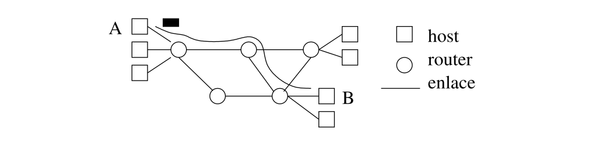
Protocolos
Internet funciona porque todos sus componentes ejecutan los mismos protocolos, es decir, siguen las mismas reglas y el mismo formato para las comunicaciones. Distinguimos 2 tipos de protocolos:
- Protocolos básicos: necesarios para que funcione Internet (TCP/IP)
- Protocolos de aplicación: necesarios para que funcionen ciertas apps. Como HTTP (web), SMTP (correo), etc.
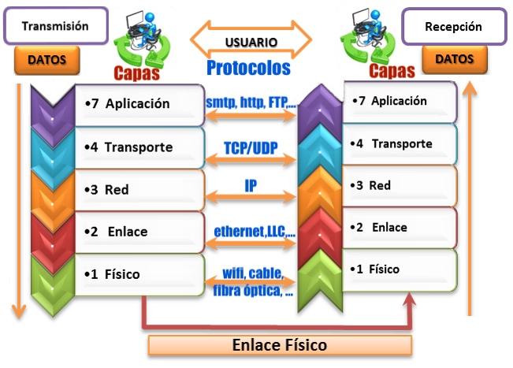
Proveedores de Internet (ISP)
Internet está operado por numerosas compañías. En el caso de Internet, distinguimos los siguientes proveedores de servicios de Internet (ISP):
- Proveedores de baja escala (residenciales): Son los que proporcionan acceso a Internet a los usuarios. El usuario hace contrato con ellos y luego parte del dinero se distribuye entre los demás proveedores.
- Proveedores de alta escala (nacionales o internacionales): Proporcionan los troncales que interconectan a los proveedores de baja escala y también las líneas de larga distancia.
1.2 Servicios orientado a Conexión y sin Conexión
Los servicios orientados a conexión y sin conexión en redes se refieren a cómo se maneja la comunicación entre dos dispositivos. Cada uno tiene características que lo hacen más adecuado para diferentes tipos de aplicaciones.
1.2.1 Servicio Orientado a Conexión
El protocolo TCP (Transmission Control Protocol) es el principal responsable de proporcionar un servicio confiable y orientado a conexión en Internet. Este servicio sigue tres fases:
Fases
- Establecimiento de la conexión: Antes de transmitir datos, el cliente solicita al servidor establecer una conexión. Esta conexión se realiza mediante el famoso handshake de tres pasos (SYN, SYN-ACK, ACK).
- Transmisión de datos: Una vez establecida la conexión, los datos se transmiten de manera confiable entre cliente y servidor.
- Desconexión: Cuando la comunicación finaliza, ambos extremos cierran la conexión y liberan los recursos asignados.
A pesar de que hablamos de una conexión, esta conexión es a nivel de software, no de hardware, y afecta únicamente a los hosts implicados. Los routers intermedios no son conscientes de esta conexión. Esto significa que el estado de la conexión solo se mantiene en los dispositivos que están enviando y recibiendo datos.
Características
-
Segmentación: Si los datos enviados por la aplicación son grandes, TCP los divide en fragmentos más pequeños llamados segmentos. Estos segmentos se envían por separado y luego se reensamblan en el destino.
-
Transferencia confiable: TCP asegura que todos los datos lleguen sin errores y en el orden correcto. Para lograr esto, el receptor envía confirmaciones (ACKs) de los paquetes recibidos. Si el emisor no recibe una confirmación, asume que el paquete se perdió o llegó con errores, y lo retransmite.
-
Control de Flujo: Este mecanismo asegura que el emisor no envíe más datos de los que el receptor puede manejar. Si el receptor es lento o tiene poca memoria, puede reducir la cantidad de datos que el emisor envía.
-
Control de congestión: TCP ajusta la cantidad de datos que envía en función de la capacidad de la red. Si detecta que la red está congestionada (es decir, muchos paquetes se pierden), reduce su tasa de envío para evitar saturar los enlaces y routers.
1.2.2 Servicio Sin Conexión
El protocolo UDP (User Datagram Protocol) ofrece un servicio sin conexión. Aquí, el emisor envía los paquetes de datos sin necesidad de establecer una conexión con el receptor. No hay fase de conexión, ni confirmaciones,. lo que implica que:
- No hay garantías de entrega: El emisor no sabe si los datos llegaron correctamente al destino, ya que no hay mecanismos para confirmarlo.
- No hay control de flujo ni congestión: El emisor envía datos tan rápido como lo desee, sin considerar la capacidad del receptor o el estado de la red. Esto lo hace menos confiable, pero mucho más rápido que TCP.
Características de UDP
- Simplicidad y rapidez: UDP no se preocupa por establecer una conexión ni por la retransmisión de paquetes perdidos, lo que lo hace más rápido.
- Menos fiabilidad: No garantiza que los datos lleguen en el orden correcto o que lleguen sin errores.
Ejemplos de uso de UDP
UDP es ideal para aplicaciones donde la velocidad es más importante que la fiabilidad, como:
- Videoconferencias: Donde perder algunos paquetes de datos no afecta gravemente a la calidad de la llamada.
- Juegos en línea: La prioridad es la rapidez en la transmisión, y no necesariamente que todos los paquetes lleguen.
- Streaming de medios: Donde pequeños fallos o retrasos no son críticos.
Resumen
- TCP: Es ideal cuando la fiabilidad es crucial, pero es más lento debido al control de flujo, la retransmisión de datos y la gestión de conexiones.
- UDP: Es preferido para aplicaciones que requieren rapidez y pueden tolerar la pérdida de algunos datos, como las videollamadas o juegos en tiempo real.
1.3 Redes de Conmutación de Circuitos (CC)
En una red de este tipo, antes de transmitir los datos hay una fase de conexión en la que se reservan los recursos hardware que se usaran. Estos quedan reservados y no pueden ser utilizados por otra transmisión. Durante la fase de conexión se establece la ruta. La transmisión finaliza con una fase de desconexión que libera a todos los recursos.
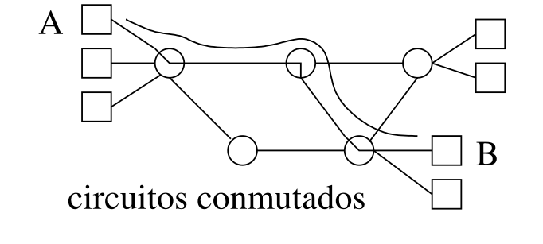
Tenemos los siguientes circuitos conmutados:
- Sin multiplexado: por cada enlace solo se puede realizar una transmisión de cada vez.
- Con multiplexado: la capacidad de enlace se reparte entre varias transmisiones, dividiendo en varias ranuras el tiempo o la frecuencia. Cada ranura queda reservada a una determinada transmisión y las demás no las pueden usar.
1.3.1 Multiplexado por División en Frecuencia (DFM).
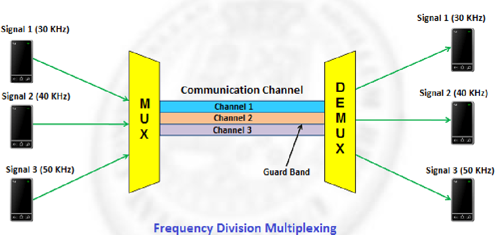
Por un mismo enlace se pueden enviar varias transmisiones si modulamos a una frecuencia distinta cada una de ellas. Por ejemplo las transmisiones por radio. En los receptores, las distintas frecuencias se pueden separar mediante filtros:
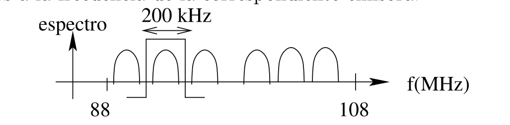
1.3.2 Multiplexado por división en tiempo (TDM)
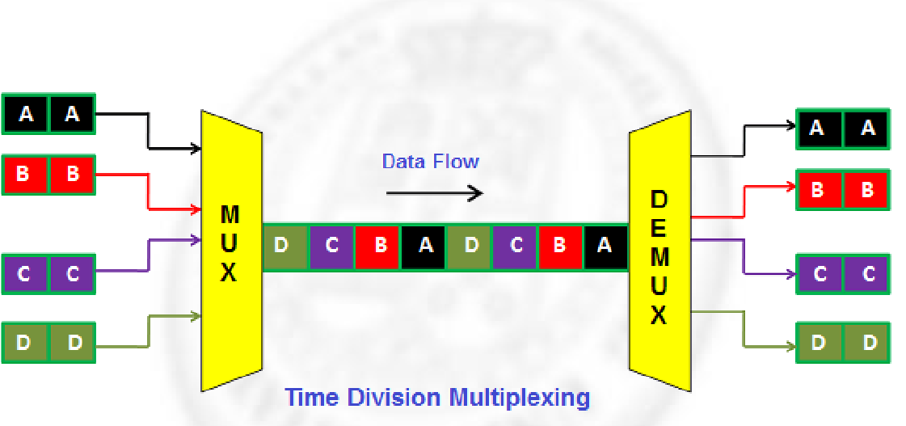
Se asigna periódicamente una ranura de tiempo a cada transmisión. Una vez completado un ciclo (marco) se comienza de nuevo.
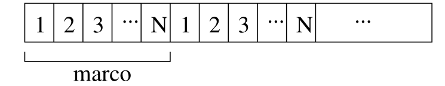
Las redes de conmutación de circuitos son derrochadoras puesto que reservan recursos aunque no los vayan a usar.
1.4 Redes de conmutación de paquetes (CP)
No se reservan recursos para la transmisión, todos se comparten y asignan bajo demanda. Estas redes trabajan con paquetes, que son bloques de datos de longitud determinada. Si el mensaje es más grande, se segmenta en varios paquetes. Cada paquete además de datos, contiene una cabecera con información de control para que el paquete pueda llegar al destino. Hay también paquetes que llevan solo información de control, como los paquetes de confirmación.
Los routers funcionan como conmutadores de paquetes, usualmente operando mediante almacenamiento y reenvío. Cuando el paquete llega al router, se procesa y almacena en la cola de salida hasta que le llega el turno para pasar al enlace (siguiente router). Si la cola se llena, se descarta el paquete.
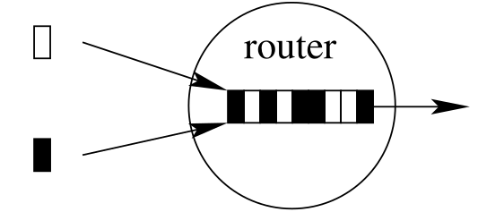
1.4.1 Retardo
Componentes del retardo:
- Retardo de procesamiento (router): examinar la cabecera y dirigir el paquete a la salida.
- Retardo de espera en cola(router): proporcional a lo cargada que esté la red
- Retardo de transmisión (router/host): tiempo que pasa entre que el host escribe en el enlace el primer bit del paquete hasta el último
- Retardo de propagación(enlace): depende del tipo y longitud del enlace.
El retardo total se puede calcular como:
Donde el retardo de transmisión del router/host se calcula como:
: tamaño del paquete (bits). : velocidad de transmisión del router/host (bits por segundo).
Y el retardo de propagación del enlace se calcula como:
: distancia del enlace (metros). : velocidad de propagación en el enlace (metros por segundo).
[! Info] El ancho de banda (BW)es una medida de la capacidad de transmisión de datos en una red o en un medio de comunicación. Básicamente, representa la cantidad de datos que pueden enviarse o recibirse en un determinado período de tiempo, generalmente medido en bits por segundo (bps) o sus múltiplos, como megabits por segundo (Mbps) o gigabits por segundo (Gbps).
En una red de 100 Mbps, el ancho de banda máximo es de 100 megabits por segundo. Si se supera este límite, habrá congestión, y los datos pueden retrasarse o perderse. Se puede pensar como número de bits que caben en el enlace. **Capacidad de enlace= retardo * BW **
1.4.2 Comparación de CC contra CP
Pregunta. Sea una red compartida por varios usuarios cada uno de los cuales transmite un 10 % del tiempo. (a) Si la red funciona en modo de CC con 10 canales (ranuras de tiempo o frecuencias), ¿cuántos usuarios podrá haber simultáneamente? (b) ¿Y si la red funciona en modo de CP? Respuesta. En la red de CC hay 10 canales, por lo tanto sólo puede haber 10 usuarios simultáneamente. Se supone que la red tiene recursos para que cada uno de estos 10 usuarios transmita el 100 % del tiempo, aunque al final sólo lo haga el 10 % del mismo. Si la misma red (con la misma capacidad de routers y enlaces) se pone a trabajar en modo de CP, teóricamente podrı́a soportar 10 × 10 = 100 usuarios simultáneamente. Sin embargo, esto es en teorı́a, porque en la práctica los retardos serı́an muy altos. En la práctica (con cálculos de la teorı́a de colas) podrı́a haber 35 usuarios con retardos prácticamente despreciables.
1.4.3 Segmentación
Razones para la segmentación:
- Menor tiempo de transmisión
- Una transmisión no satura la red con mensajes enormes, sino que da oportunidad a otras transmisiones para que intercalen sus paquetes.
- En caso de errores en un paquete, solo hay que transmitir el paquete con errores.
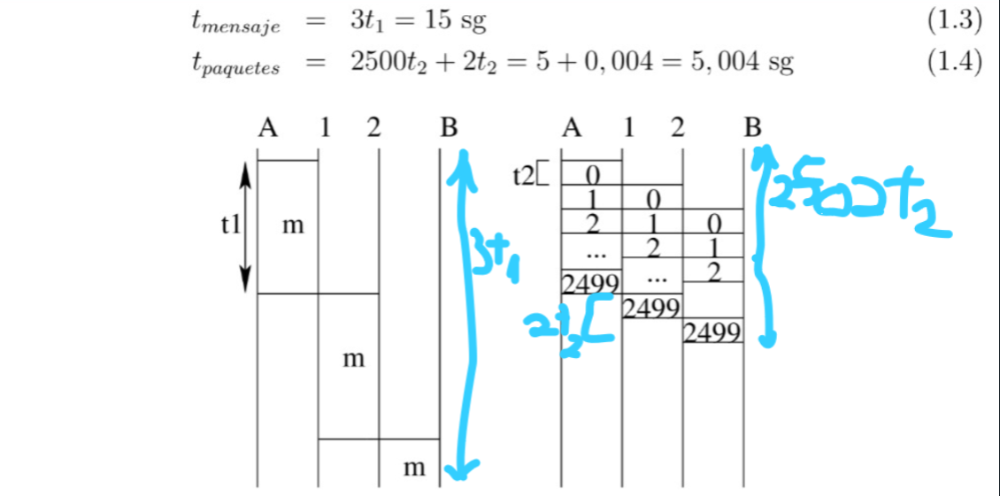
1.4.4 Redes de Datagramas
En las redes de datagramas cada paquete se maneja de forma independiente. No se establece ninguna conexión antes de que los datos sean enviados.
Cada paquete tiene en su cabecera la dirección IP de destino. Cuando llega a un router, este leer la dirección y decir por qué camino enviarlo, colocándolo en en la cola de salida más adecuada. Esto se conoce como encaminamiento y se usa una tabla de rutas para decidir a qué cola se debe enviar el paquete. Estas tablas se actualizan continuamente para reflejar los cambios en la red. Los routers además no almacenan ninguna información sobre los paquetes anteriores, por lo que paquetes de la misma transmisión pueden seguir rutas diferentes y podrían llegar al destino desordenados.
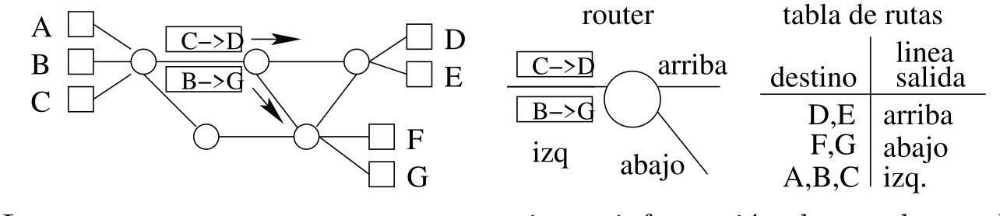
Si se cae un enlace de la red, los paquetes pueden ser redirigidos por otras rutas, sin embargo, no hay garantía de que los paquetes lleguen en el orden correcto o que todos lleguen. Son ideales para redes grandes y heterogéneas como Internet, donde es difícil planificar una ruta fija debido a la complejidad de la red.
1.4.5 Redes de Circuitos Virtuales
En las redes de circuitos virtuales, se establece una conexión lógica entre el emisor y el receptor antes de que los paquetes se transmitan. Esta conexión no es física, sino una ruta planificada que se sigue durante la transmisión.
Se necesita una solicitud de conexión por parte del host origen antes de comenzar a enviar datos, tras esto, la red planifica una ruta hacia el destino y asigna un número de circuito virtual a esa ruta. Los paquetes van a llevar ese número de circuito virtual en la cabecera, y los routers usarán ese número para dirigir a los paquetes, por lo que todos los paquetes de la misma transmisión seguirán el mismo camino (a diferencia de la red de datagramas que iban todos a su bola). Finalmente se produce la solicitud de desconexión y se liberan los recursos asociados a esa transmisión.
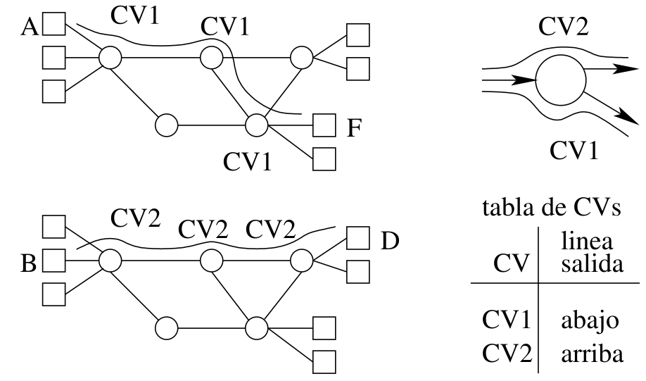
El número de circuito virtual puede cambiar de una enlace a otro, lo que permite reutilizar números de circuitos virtuales en diferentes enlaces, lo que ahorra espacio en las cabeceras de los paquetes y nos evita tener que mantener una tabla global con todos los circuitos virtuales de la red. Cada routes solo necesita saber qué números de circuito son válidos en los enlaces locales.
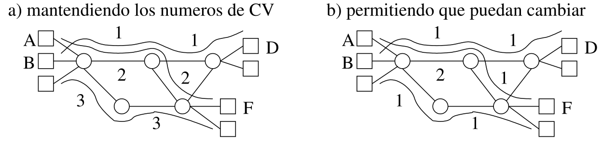
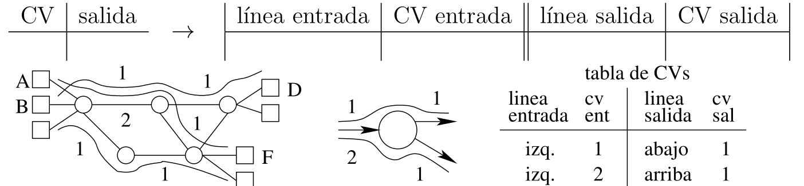
Ofrece una ruta fija para todos los paquetes, por lo que llegan en orden y no se pierden. Es más fiable para ciertas aplicaciones. Sin embargo, no es tan flexible como las redes de datagramas. Si algún enlace en la ruta falla, toda la transmisión se ve afectada. Son más adecuadas para redes más pequeñas y controladas donde se requiere mayor fiabilidad y velocidad en las transmisiones.
1.4.6 Comparación
| Característica | Redes de Datagramas | Redes de Circuitos Virtuales |
|---|---|---|
| Encaminamiento | Independiente para cada paquete | Fijo, basado en el circuito virtual |
| Almacenamiento en routers | No se almacena información de paquetes anteriores | Se mantienen tablas de circuitos virtuales |
| Rutas | Pueden variar para cada paquete | Fija para toda la transmisión |
| Orden de llegada | Los paquetes pueden llegar desordenados | Los paquetes llegan en orden |
| Fiabilidad | Menos fiable | Más fiable |
**A partir de aquí no suele caer nada más de este tema.** Ir al 1.8
1.5 Redes de difusión
Todos los host reciben las transmisiones pero solo la procesa el destinatario. La wifi es un ejemplo. Internet es una red de datagramas, así los especifica IP (TCP/IP). Sin embargo algunas capas de internet funcionan con otro tipo de tecnología: conmutación de circuitos, circuitos virtuales o difusión.
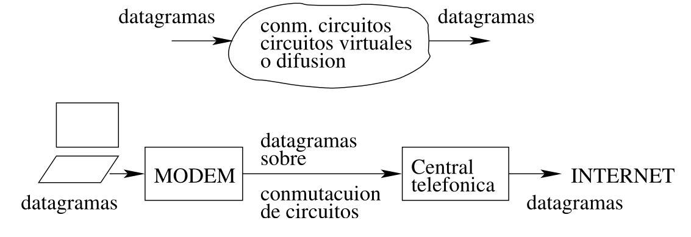
1.6 Acceso a Internet
EL accesos residencial a Internet se puede hacer de 4 formas:
- Módem telefónico
- ADSL(línea digital asimétrica del suscriptor)
- Cable HFC (híbrido fibra-coaxial)
- FTTH (fibra hasta el domicilio) El acceso empresarial se suele hacer mediante redes locales Ethernet, Wifi.
1.6.1 Módem Telefónico
Usa la línea telefónica como si la transmisión a Internet fuese una llamada de voz normal. Primero llama al número telefónico del ISP(Internet Service Provider) y una vez establece la conexión convierte la señal digital en una analógica modulada. Esto se llama modulación:
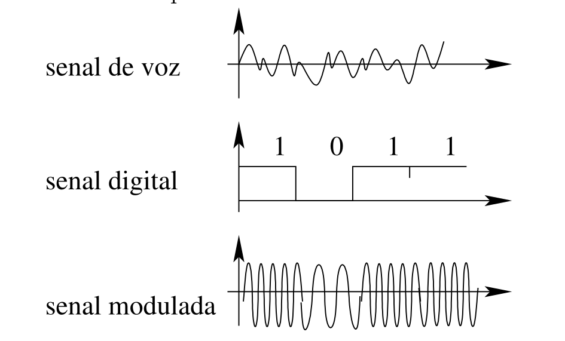
EL receptor realiza la operación contraria, demodulación. Módem: modular-demodular. El problema es que las señales de voz que usa el sistema telefónico tienen ancho de banda de frecuencia estrecha. Como este ancho de banda solo puede conseguirse una velocidad de 50 kbps mediante modulación, era muy lento. Se conectaba el ordenador a la línea telefónica y las ondas transportaban la información.
1.6.2 ADSL
Línea digital asimétrica del suscriptor. Trata de aprovechar todo el ancho de banda en frecuencias del cable que conecta nuestra casa con la central telefónica. Hay que tener en cuenta que en las llamadas la capacidad de este cable es desaprovechada (solo usamos los primeros 4KHz del ancho de banda aprox de 1MHz):
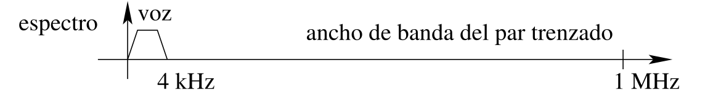
Usa multiplexión por división en frecuencia, dividiendo el ancho de banda en 3 canales. EL primero transmite la voz telefónica, el segundo para el envío de Internet (subida) y el tercero para la recepción(bajada). El de bajada es el de mayor velocidad, porque el usuario descarga más de lo que sube.
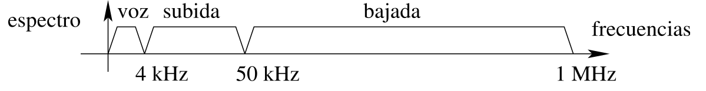
Se pueden transmitir hasta 10 Mbps. Permite usar teléfono y conexión a Internet por separado.
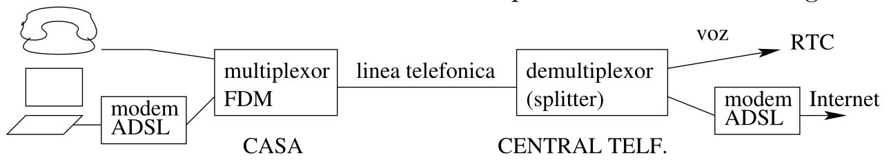
1.6.3 Cable HFC (híbrido y coaxial)
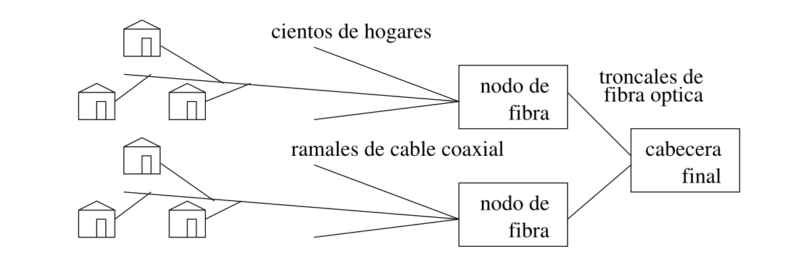
La cabecera final es equivalente a la central telefónica, está centraliza todas las transmisiones de abonados que desde aquí pasan a Internet a través de un router. De aquí los troncales de fibra conectan a los nodos de fibra que a su vez mediante cable coaxial para dar servicios de TV, Teléfono e Internet. Las troncales se hacen a partir de fibra porque necesitan mucha capacidad, el resto de línea coaxial (barato y fácil de instalar). Todos los cables son multiplexados (TDM y FDM).
1.6.4 FTTH
Fiber to home:
- Fibra para distribución de servicios avanzados: Triple Play
- OLT (Optical Line Terminal): punto final que viene del ISP
- ODN (Optical Distribution Network): desde el OLT a los usuarios
- ONT (Optical Network Termination): conversión de señales ópticas ↔ eléctricas
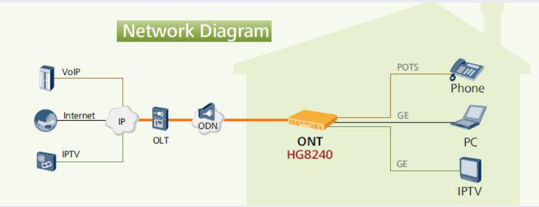
1.6.5 Acceso Empresarial
Mediante una LAN conectada aun router y a un ISP con enlace dedicado
Red de la USC
- Tres nodos troncales en Santiago y uno en Lugo unidos a través de RedIRIS Nova y el CESGA: -Nodos troncales de Santiago unidos con enlaces dobles de 40 GE -Enlaces dobles desde los nodos troncales a los nodos de distribución de 10 GE -Enlaces a 10 GE entre los nodos de distribución y los nodos de acceso (conmutadores a 100 Mbps o 1 Gbps)
- Acceso a Internet mediante un nodo en el Cesga que enlaza con RedIris (gestiona la red pública)
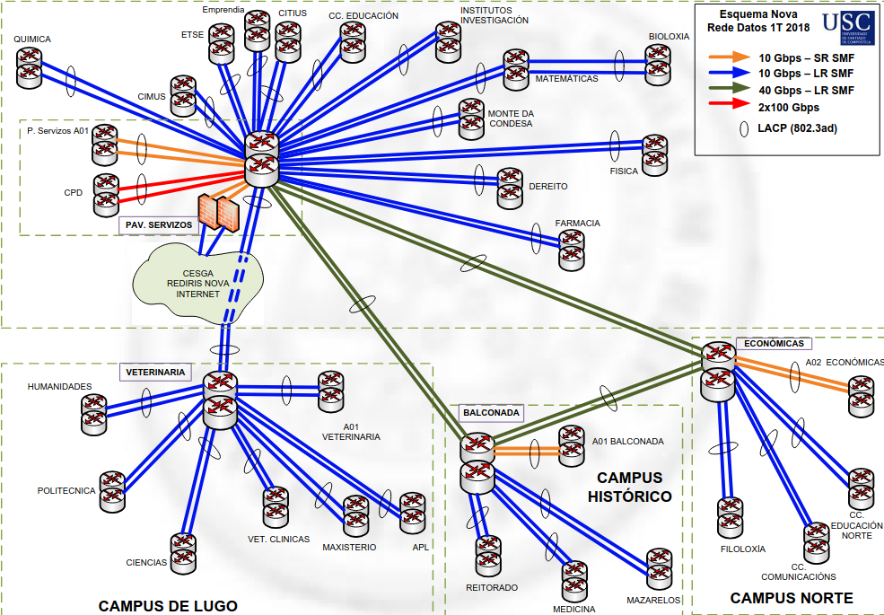
1.7 Medios de Transmisión
Distinguimos entre:
- Medios Guiados: Cable de par trenzado, Cable Coaxial y Fibra Óptica.
- Medios no Guiados: Atmósfera y espacio,canales de radio terrestre y canales de radio vía satélite.
1.7.1 Cable de Par Trenzado
El par trenzado (TP) es el cable de tupo telefónico, Consta de 2 hilos de cobre trenzado, es decir, dispuestos en espiral y enrollados entre sí. En enrollado disminuye alfo de pérdidas de energía por radiación e interferencias. Dentro de un conducto de plástico pueden disponerse cientos de estos pares. Tenemos 2 tipos:
En el apantallado (STP), que es de mayor calidad, el par esta recubierto de una película de metal con el objetivo de disminuir perdidas El par sin apantallar (UTP), carece de este recubrimientos. Las categoría 1 y 2 son las de peor calidad y se usan en telefonía, y las de categoría 3 se usan en redes locales de 10Mbps y la de categoría 5 en las de 100Mbps.
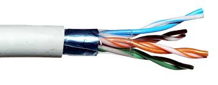
1.7.2 Cable Coaxial
El cable coaxial esta formador por dos conductores: uno central sólido y otro exterior formador por una malla de hilos finos que recubre al primero. Entre ambos hay plástico, la ventaja de esta disposición es que la radiación queda atrapada entre ambos y no escapa al espacio, evitando pérdidas.
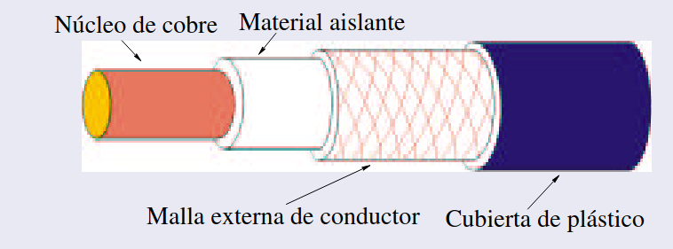
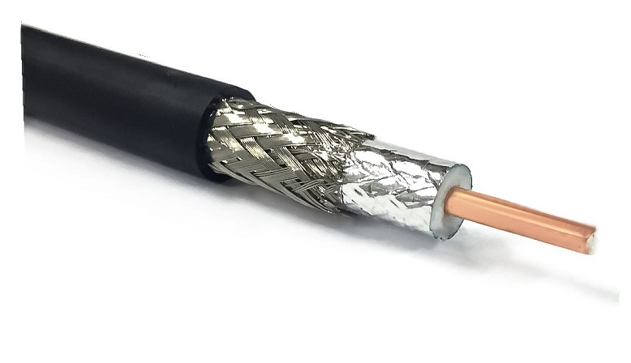
Hay 2 calidades, el de 50 ohmios que se utiliza para transmitir señales digitales en banda base (sin modular) en algunas redes locales. Y también el de 75 ohmios de mejor calidad, se utiliza en banda ancha (con modulación) en las redes de cable CGH y permite cientos de canales de TV, teléfono e Internet.
1.5.3 Fibra Óptica
En vez de trasmitir señales eléctricas, transmite luz, evitando pérdidas por radiación. Las fibras se hacer a partir de vidrio o plástico transparente y ultrapuro. Tienen baja atenuación, por lo que pueden usarse hasta distancias de 100km sin repetidores. Son finas como un cabello, por lo que dentro de un conducto de pueden alojar miles
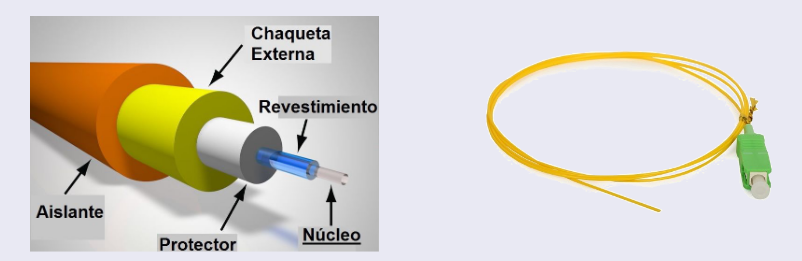
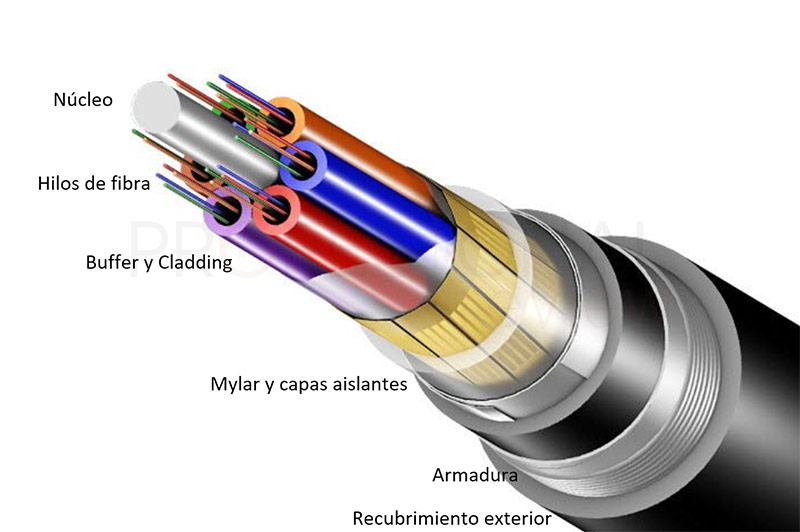
Precio elevado, Capacidad de Transmisión Mayor que cualquier Cable.
Fibra Multimodo
- La luz se propaga rebotando en las paredes del núcleo
- Utilizada para redes de conexión locales, centros de datos de edificio a edificio y para FTTH.
Fibra Monomodo
- Se propaga en línea recta =⇒ mayor distancia
- Más costosa
Designación OC-n
Velocidad de enlace n × 51,8 Mbps
**No creo q pregunte esto pero está bien pa entender el concepto en general de los siguientes temas.**
1.8 Arquitectura en Capas
La arquitectura en capas se utiliza para facilitar el diseño de los protocolos de comunicación. Consiste en dividir la comunicación en tareas independientes y poner cada una de ellas en una capa. Las capas superiores utilizan los servicios de las inferiores. La arquitectura en capas permite conectar computadores y sistemas muy diferentes con la única condición de que respeten las especificaciones de cada capa. Cada capa es independiente de las demás. Aunque las transmisiones son en vertical, los protocolos pueden diseñarse como si fuesen horizontales. Cada capa puede ignorar el contenido de las capas contiguas, añadiendo instrucciones para el destinatario de cada capa.
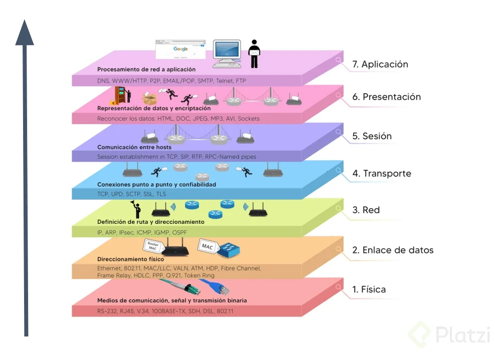
En la Capa de Aplicación, se localizan los procesos que se comunican entre sí mediante mensajes. Por ejemplo si queremos comunicar 2 procesos (un servidor con un cliente). Para que se pueda realizar hay que acordar un protocolo: formato para los mensajes y unas reglas. Los datos se llaman mensajes.
La Capa de Transporte aparece ante la situación de que los procesos a comunicar están en diferentes computadores y que existe algún tipo de conexión entre estos. La Capa de Transporte prepara los mensajes para que puedan transmitirse fuera del computadores. Los datos se dividen en segmentos (en TCP) o permanecen como mensajes (en UDP).
La capa de Red aparece si los ordenadores no están directamente conectados, si no que forman parte de una red. Esta se encarga de buscar las rutas y llevar los paquetes desde Host origen hasta el Host destino. Los segmentos o mensajes se encapsulan en paquetes o datagramas.
La Capa de Enlace se encarga de los detalles de bajo nivel de la transmisión de cada bloque de datos (paquete) de un extremo a otro de un enlace. En este enlace se puede usar cualquier tipo de tecnología de red : datagramas, circuitos virtuales, etc. El enlace puede ser de cable o de ondas de radio y puede ser de punto a punto(un emisor y un receptor) o de difusión(múltiples transmisiones). Se encarga de comenzar la transmisión cuando el enlace está libre, de ir almacenando los datos en la memoria cuando van llegando, de detectar colisiones en enlaces de difusión, etc. Los paquetes o datagramas se convierten en tramas (frames).
La Capa Física trabaja a nivel de bits: convierte los bits 0 y 1 en pulsos, señales eléctricas. Conforma el pulso dándole la correspondiente forma, tensión y duración. También define las características mecánicas y físicas del medio de transmisión.
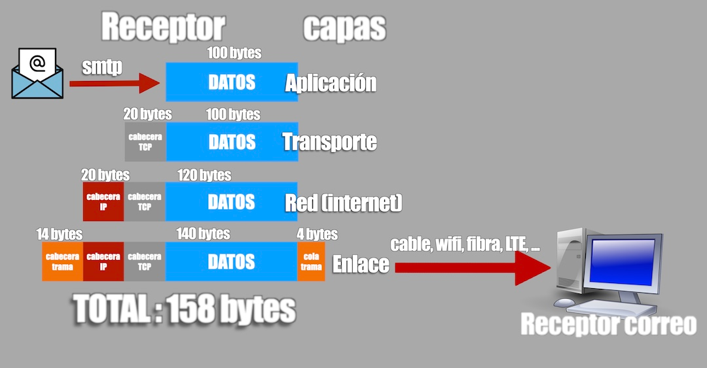